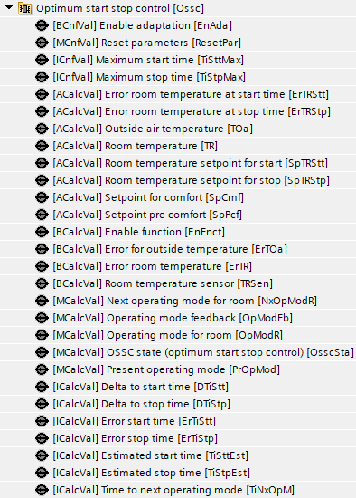
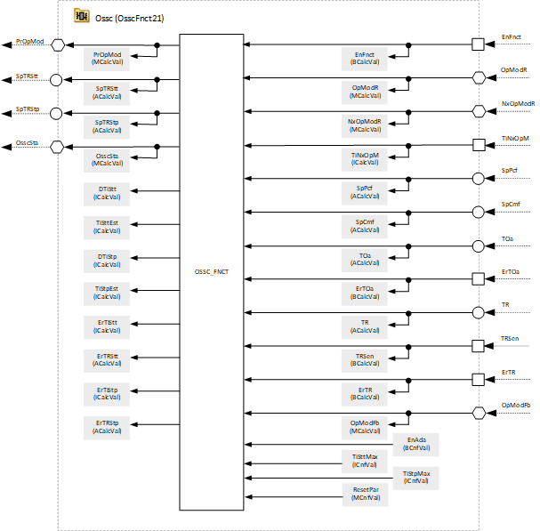

[OsscFnct21] Function block on BACnet, OSSC
Program block, name / node subtype: [OsscFnct21] Function block on BACnet, OSSC
Library hierarchy: Universal functions
Family: FBtoBACnet
Project tree | Diagram |
|---|---|
|
 |  |
Configurator
N/A

Program blocks are stored in the library without I/Os. Use the auto-create and auto-connect functions to create I/Os and/or to connect them to the interface blocks, e.g., R_A, CMD_B. Alternatively, take the I/Os from the folder containing the predefined I/Os in the library and/or from the plant and connect them to the interface blocks.
Function
Program block for displaying on BACnet for the function block OSSC
Mandatory elements
Name | Description | Type | Alarm / Notification class | Trend / Type | |
|---|---|---|---|---|---|
|
EnAda | Enable adaptation | BCnfVal: Binary configuration value | No | No | |
ResetPar | Reset parameters | MCnfVal: Multistate configuration value | No | No | |
TiSttMax | Maximum start time | ICnfVal: Integer configuration value | No | No | |
TiStpMax | Maximum stop time | ICnfVal: Integer configuration value | No | No | |
ErTRStt | Error room temperature at start time | ACalcVal: Analog calculated value | No | No | |
ErTRStp | Error room temperature at stop time | ACalcVal: Analog calculated value | No | No | |
TOa | Outside air temperature | ACalcVal: Analog calculated value | No | No | |
TR | Room temperature | ACalcVal: Analog calculated value | No | No | |
SpTRStt | Room temperature setpoint for start | ACalcVal: Analog calculated value | No | No | |
SpTRStp | Room temperature setpoint for stop | ACalcVal: Analog calculated value | No | No | |
SpCmf | Setpoint for comfort | ACalcVal: Analog calculated value | No | No | |
SpPcf | Setpoint pre-comfort | ACalcVal: Analog calculated value | No | No | |
EnFnct | Enable function | BCalcVal: Binary calculated value | No | No | |
ErTOa | Error for outside temperature | BCalcVal: Binary calculated value | No | No | |
ErTR | Error room temperature | BCalcVal: Binary calculated value | No | No | |
TRSen | Room temperature sensor | BCalcVal: Binary calculated value | No | No | |
NxOpModR | Next operating mode for room | MCalcVal: Multistate calculated value | No | No | |
OpModFb | Operating mode feedback | MCalcVal: Multistate calculated value | No | No | |
OpModR | Operating mode for room | MCalcVal: Multistate calculated value | No | No | |
OsscSta | OSSC state (optimum start stop control) | MCalcVal: Multistate calculated value | No | No | |
PrOpMod | Present operating mode | MCalcVal: Multistate calculated value | No | No | |
DTiStt | Delta to start time | ICalcVal: Integer calculated value | No | No | |
DTiStp | Delta to stop time | ICalcVal: Integer calculated value | No | No | |
ErTiStt | Error start time | ICalcVal: Integer calculated value | No | No | |
ErTiStp | Error stop time | ICalcVal: Integer calculated value | No | No | |
TiSttEst | Estimated start time | ICalcVal: Integer calculated value | No | No | |
TiStpEst | Estimated stop time | ICalcVal: Integer calculated value | No | No | |
TiNxOpM | Time to next operating mode | ICalcVal: Integer calculated value | No | No | |